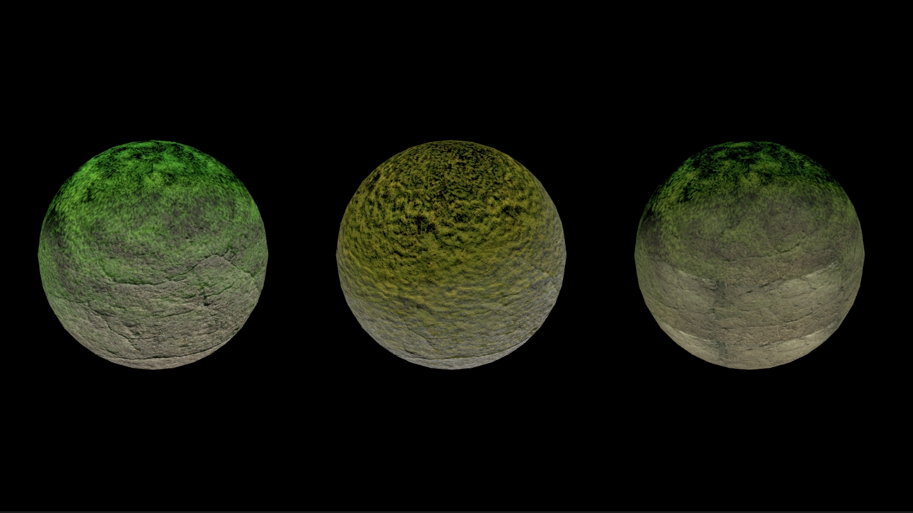
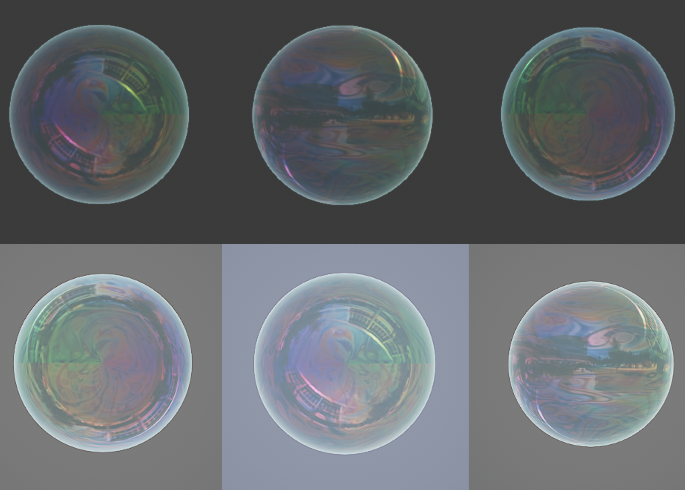

Shader Exploration
description
In order to build shader skills, I delved into learning about both HLSL and the Unreal Engine
Material Graph. I learned basics from tutorials such as Dapper Dino, and adapted the
base code with my own research and learning. Throughout the shader process for both Unity
and Unreal Engine, I have learned about vertes displacement, colors, lighting, normals, and more.
timeline
06/2025
role
individual
tools
Unity,
HLSL,
Unreal Engine

unreal engine


Bubble
This stylized bubble material was created in Unreal Engine using Material Graph. I wanted to replicate the thin, colorful, reflective look of real soap bubbles. It uses scalar parameters for metallic, specular, roughness, opacity, and refraction to control surface properties. To simulate the rainbow-like edge highlight, I used a Fresnel node multiplied by a color vector for emissive glow. The main body color is built using a 3ColorBlend and a texture sample, allowing me to create rich color variation across the bubble’s surface. I also experimented with panning textures and animated refraction to simulate subtle wobble.
hlsl / unity
Water
This stylized bubble material was created in Unreal Engine using Material Graph. I wanted to replicate the thin, colorful, reflective look of real soap bubbles. It uses scalar parameters for metallic, specular, roughness, opacity, and refraction to control surface properties. To simulate the rainbow-like edge highlight, I used a Fresnel node multiplied by a color vector for emissive glow. The main body color is built using a 3ColorBlend and a texture sample, allowing me to create rich color variation across the bubble’s surface. I also experimented with panning textures and animated refraction to simulate subtle wobble.
Rock + Grass
This shader blends two textures (like rock and grass) based on the surface's world-space direction and angle, using dot product math and a fresnel effect for smoother transitions. I customized it from a tutorial by adding tint controls and fresnel-based blending to simulate natural material buildup like moss or dust. It taught me how to use normals, direction vectors, and procedural blending in ShaderLab.